AHC063参加記
背景
背景というほどでもないですね。出たから書きます。ためると書かないことがわかっているので、今回は書きながらやってみます。吉と出るか凶と出るか。
勝って笑えてるといいね。
内容
各日の作業内容を書きます。考えたこと、やったことなど。コードは書いているとキリがないので一部だけ引っ張ってきます。
推敲で誤考察を消すこともできますが、参加記としては間違っていてもいいと思うので、変なこと言ってるなぁと思って流していただけると幸いです。
day1
問題文を読みました。問題文はこちらです。
変則的な蛇ゲームです。大体の蛇ゲームは自身の体に接触するとゲームオーバーですが今回は嚙み千切るそうです。 閉じ込められる心配はないですがその分選択肢が増えて大変です。
また、噛み千切ると蛇の体の残りが餌となって散らばるそうです。うまいタイミングで噛み千切ってスコアを伸ばしてねってことでしょうか。
点数の様子を見ます。
得点
出力した操作列の長さを T、操作完了時点における蛇の長さを k、蛇の色列を c0 ,⋯,ck-1 とする。 ここで、 k は M 未満であってもよい。 また、誤差 E を、 cp≠dp であるような p=0,⋯,k−1 の個数と定義する。 このとき、以下の絶対スコアが得られる。
T+10000×(E+2(M−k))
絶対スコアは小さいほど良い。
Tの最大値は1e5で1倍で、誤差は1、長さが足りないものは2として、さらに1e4倍されてスコアに加算されます。 あまりターンをかけすぎると誤差をなくしてもお得ではなくなってしまうそうです。
制約も見なくてはいけません。
盤面の大きさNが8~16
長さMは盤面の1/4 ~ 3/4
色数Cは3 ~ 7
エサはM-5個
もともと体長が5なのでその分の餌がないということですね。
それ以外は特に読み取れません。なんもわからないですね。
では考察に入ります。
とりあえず色が間違っていてもくっつけた方がお得なのは頭に入れておきましょう。
足りない長さ1当たり2e4、間違ってる色当たり1e4なので間違っても体調を伸ばした方がお得です。 ついでに展開もしておきましょう。
T + 10000×E + 20000×M − 20000×k
第3項の20000×Mは定数です。で、体を余らせる意味もないので全部くっつけることにしましょう。
1つの餌を見捨てて3つの位置が合う、みたいなことになれば捨てるのもありですが、そんな器用な計算はできないと思います。
嚙み千切る挙動も考えます。

最小のループを考えると蛇の体は5以下にならないことがわかります。まぁこれは制約においてM-5と特別扱いされているのでわかります。
で、嚙み千切られて餌になったc5と頭であるc0の位置関係を確認すると、噛み千切られた体と頭が隣接していることがわかります。つまり千切られた体はそのままたどることで簡単に復元できるということになります。
これはうまく使いたいです。……使えるといいね。
それはそれとして短い状態でせっせこ端っこの方に欲しい色をためていくことはできそうです。
ということは、下の図のように餌をため込んで最後にまとめて食べるということは可能そうです。
Nは十分な大きさがあるので端2マスをあけておいても十分な隙間は保持できます。ぱっと見の印象で全部の色を揃えるのは無理だと思ってましたが意外といけそうです。安心しました。

とりあえずこの方針を詰めましょう。
赤丸を付けたマスに欲しい色を置くには6の字を作ればよいです。この状態で噛み千切って下に脱出すれば欲しい色を置くことが可能です。
すこし上のマスはもう指定の色を置いているので立ち入らないこととします。6の字を作る場合影響はありません。水平に入ってくればいいので。

これはもう少し長くすることもできそうです。
下の図の様にすることでc5~c8を置きたい場所に置くことができます。工夫することで大分好き勝手に置けそうなことがわかりました。

Mの問題を解くのは無理っぽいですが、2とか4なら簡単にできそうな気がします。
ただ問題なのは置く長さによってc5以降に置くべき色が変わることです。とりあえず2ずつ置いてみるパターンを作りましょう。
スコアの見積もりもしておきましょう。指定した色2つをC5、C6に置くのにかかる手数は無視、盤面を移動するのに行くって帰るのに4Nかかるとします。 これをM/2回、面倒なのでN^2だとして、最悪でも4*N^3くらいです。Nは16までなので大体4*(2^4)^3=2^14。適当に最大長を作ってエラーが1だった場合のスコアが1e4なので大分勝てます。適当解より大分強いので満足です。
現在時刻は23時過ぎ、実装に入ります。
……全然実装イメージがわかなかったので遊んでました。
とりあえず各マスに置くべき色は出せているのでこれを利用して手動でやってみました。
理屈は悪くないと思います。あとはこれが実現可能かどうかだけです。１週間でできるのかしら？

4/04の1:00頃の成績です自明解を改良しただけでこれだけ取れたのでまだ強い解を出している人が少なそう。 気落ちしなくていいね。 提出はこちら。

day2
実装をしてましたが、あまり発想が振るわず、実現方法が確定せず。
とりあえずおきたい色をt1,t2として、この2つを回収して左上のピンクの丸に行きたいなと思いました。とりあえずt1から始めて他の色を踏まずにt2に到達できるパターンを探してあげようと思います。
……これがない場合もあると思うので１つだけ運搬する方法も考えないとなりません。
もう1つ気づいてしまいましたが、N=8の時に下2つを開けた状態で75%の最大のMを引いてしまうと大分パンパンになります。1つだけ運搬する方法も思いついているので1つずつ移動する方向で実装した方がいいかもしれません。頭がパンクしそう。

4/04の24:00頃の成績です。新しく提出はしてませんが200位程度で耐えてます。色を全部揃えきる実装をしている人は少なそう。

実装が行き詰ったのでまたビジュアライザで遊んでました。
体をたどると復元できるので、復元の最後を欲しい色の隣に置くことで一致している色の長さを+1できることに気が付きました。
これもうまい操作が必要ですが頭に入れておきましょう。体が長くなってきたときに欲しい色が全部体内にあるときとか非常に困りそう。
あとは欲しい色の隣に最後の一致を置くときに通るべき道を探すコストも高そう。上端から下端まで埋めて、噛み千切らないと次の移動ができません、とかは困る。

これを踏まえると少しずつ配置していく前者の方が簡単だと思います。実装からは逃げられなかった……。実装を頑張りましょう。

移動がややこしくなるとめんどくさいので、とりあえず一番下まで降りて欲しい色を回収するようにしました。
ターゲット色の位置によってグルグルしてカットできる場所が変わるのでこの辺は場合分けが必要そうです。
とりあえず動かせそうかマニュアルでやってみました。

やっぱり欲しい色が全部体に入ってしまうことがあります。困るので取り出すための処理が必要そうです。
あとは順序を逆で取得した場合は逆向きに6を作ることも可能なことを忘れてはいけません。
day3
下2列を通路として空けた場合に、場がいっぱいになるのは8×8だけだと思ってましたが勘違いでした。
下は13×13の場合です。右端にできるスペースは縦1で、このスペースの上の方、例えば赤の場所に餌が残ってるとめちゃくちゃ困ります。

しかもよくよく考えると長方形を詰め切れない場合、下図のように片側だけ詰めるみたいなことが起こります。上に向かう途中で途切れるのが非常に困ります。上の方からパンパンに詰めていきたい。

詰め方を変えましょう。右上を末尾としてグネグネ配置します。こうすると下２列は余るので始点がどこであってもうまく対応できそうです。
ただこれだと2つずつ詰めようとすると、Nが奇数の時に余りが発生して困ります。まぁこれはうまいことやれば詰め込めます。


まぁこんなことしなくても3個まとめておけばいいだけですが。 今はまだ2つずつ置くことすら実装できてません。 てか早く1つずつでもいいので実装したいね。
大分やりたいことが整理されてきました。これでやっとちゃんと実装できるかも……。
はい、トラップがありました。最後じゃなくて、１つ手前も困ります。同じ置き方をしようとすると無理です。左から置いてあげないとなりません。
gifは当然ながら手動操作です。が、今度こそ整理できたように見えます。欲しい色が確定した行の1つしたのときの挙動に注意すればいいかも？
あとは固定するのは１つにしても、まとめて運んで次に取りやすくするとか、逆からも埋めるようにするとかがあるとなお良しってところでしょうか。 まぁこの辺は発展課題。最低限動くものを作らないと改善も何もないから……、実装から逃げるな……。

実装が進みました。欲しい色が今いる位置からx座標で3つ以上離れている場合はうまく持ってこれるようになりました。 指定の色を6番目として取得するために手前でグルグルして帳尻を合わせるために3つ以上離れているときだけ動きます。 2つ以下の場合は上下でグルグルしてあげようと思ってますが、バグってうまく動きません。
ある程度動くようになりました。よかったね。
上部に集めるように計画してましたが、スタートが左端なので初動を吸収しやすくするために縦に並べるようにしました。実装しないと見えてこないこともあるよね。これで場合分けが減ったので高評価。


何にせよ、これは手動じゃなくちゃんとプログラムで動いてます。光明が見えてきました。
……ただ休日が終わってしまいました。平日にこれの実装を進められるのかしら。まとめて埋める処理も作りたいし、時間も能力も足りない。
4/5 23:40の成績です。まだ提出は増えず。 順位は大分落ちてきましたね。そろそろ急がないといけない。

day4
実装がすすまない。というより、条件が複雑すぎてパンクしそうなのでさらなる簡略化を計ります。
現状下から2番目の扱いがめんどくさいことになってます。説明するのもめんどくさいくらいめんどくさいので割愛します。
場合分けが必要なパターンが2つあるのが悪いので簡略化したい。
下向きで上から埋めていくのが悪いので、上向きで上から埋めていくことにしましょう。
イメージは次の感じです。せっかくプログラムで動いてたのにまた手動に戻ってきちゃった。
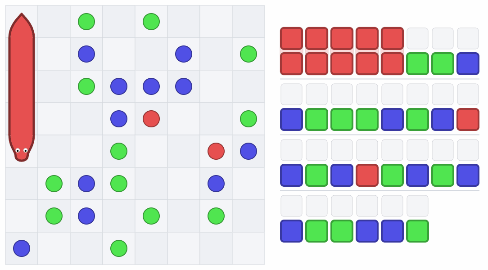
こうすると何がうれしいかというと、一番下だけ行動が変わって、それ以外は同じ動きで達成できます。素晴らしい。
しかも噛み千切った後の体が確定したい列に残らないのもポイントが高い。さらにさらに、噛み千切るときに6番目、7番目が上から順に並ぶので色をいっぱい置くように改修もしやすそうです。
なぜこうしてなかったのか不思議なレベルです。
ここまでの実装の大半がおしゃかになりましたが、完成しないよりかマシです。引き続き実装を頑張りましょう。
……実は実装がそんなに好きじゃないかもしれない。記事を書きながらやっているから気分が違うのか、単純に実装が重すぎて嫌なのかはわかりませんが。
day5
できた！！！！

たまに無限ループが発生するので修正を重ねます。

seed2も行けました。でもseed3でバグってます……。一生バグってるな……。まぁ光は見えているので頑張りましょう。

さすがに初日の提出では苦しくなってきましたね。上下左右数パターン試すみたいなことをすれば伸ばせますが、全部揃えた方が強いので却下。
day6
最初の100個のサンプルを通せたので出しました。提出はこちらです。


桁も違うしちゃんと動いてそうですね。まぁたまに動いてないのがあっても気づけないのでリファクタすることを考えてテストコードは書いた方がよさそうです。 長期は時間に余裕があるのでテストコードを書いて動いた方がトータルお得になりそうな気もします。
実行時間にも余裕があります。各色を置くときの手法を10個くらい持っておいて、ビームサーチをしてみてもいいかもしれません。
今回、上では触れてきていませんが、Huristicにおいて初めてstateを作成しました。
struct State {
// 現在の場の状態
vector<vector<ll>> field;
// 確定したマス
vector<vector<bool>> fixed;
// 蛇の座標deque
deque<Pos> snakePos;
// 先頭からの色のリスト
vector<ll> colorList;
// 移動リスト
vector<char> dirs;
};
このステートを食わせればいいだけなのでビームサーチの状態管理もラクちんです。実装してみましょう。
現状最短距離を返すだけなのでこれを複数返せるようにします。
とりあえず各状態に対して10個ずつ調べるようにします。
ここで状態は、(y,x)まで埋めているときの手数がmの時を1つの状態としています。場の状態を考えるのが適切ですが、そんな器用なことはできません。
提出コードはこちら。結果は次の通りです。


驚きポイントが２つあります。
まず１つ目、なんと桁が変わりました。バグが残ってたのかもしれません。早くテストを書かないといけない。
2つ目、priority_queueから取り出して状態判断を行っているstateは10個しかないので実行時間も大体10倍だと思ってました。が、なんと20倍近くになっています。どこで時間を食っているのかを見つけないといけません。queueにも精々100個くらいしか入らない想定だったのでここで時間を食うとも思えないんですよね……、悪いのどこだろ……。
ビームサーチの提出バグってるせいで素直に結果を比較できませんが、seed0に関しては380->238となりました。大分効いているのは確かです。
NとMごとに整理して表を作るのを忘れてはいけません。前回の長期(AHC061)で特定の条件下だけぼろぼろだったので種類ごとの分類は必須です。 まだ整理してませんが、大体MはNの2乗に比例し、一回当たりの手数は行って帰ってくるので多く見積もって4NなのでNに比例とすると、手数はN^3に比して増加しているのではないでしょうか。
テスト作成と実験で改良の手が止まりますが仕方ないね。
提出しない理由はないので横方向に遠い方から回収するようにしてみました。遠くに先に行くことで前もって近くに寄せられると強いかも？と思ったからです。
47670->51434で点数は悪化しました。解の探索範囲も少し縮めましたがそれだけじゃない差が出ている気がします。ん～悩ましい。順位は4/08 23:20 現在195位です。スコアが10%変わっても5位しか変わらないということは、大幅に改善しないと順位が上がらないですね。全部揃えきる実装の人も増えてきましたね。青パフォは厳しいか……？
day7
テストコードを書いてました。バグがどんどん出てきます。分岐が増えました。泣きたい。
テストはざっくり言うと、ある位置に色を配置した後に、任意の場所から餌を回収することが可能かを確認しています。
コード
auto test = [&]() {
N = 8;
vector<char> initDir = {R, R, D, L, U};
auto init = [&]() -> State {
State state;
state.field.resize(N, vector<ll>(N));
state.fixed.resize(N, vector<bool>(N));
for (int j = 0; j < N; j++) {
for (int i = 0; i < N; i++) {
// 0だと何もないので1足しておく
state.field[i][j] = j * N + i + 1;
}
}
state.dirs = initDir;
return state;
};
ll x = 1;
for (int y = 0; y < N - 1; y++) {
for (int j = 0; j < N; j++) {
for (int i = 0; i < N; i++) {
for (int ty = 0; ty < N; ty++) {
// cout << "now y == " << y << "&& x==" << x << " && i == " << i
// << " && j == " << j << " && ty == " << ty << endl;
if (i == ty && j == 0) {
// 元からそこに欲しい色があることになる
continue;
}
state = init();
state.field[y][x] = -2;
state.field[y][x + 1] = -1;
state.field[y + 1][x] = -1;
state.field[y + 1][x + 1] = -1;
state.snakePos.push_back(Pos(y, x));
state.snakePos.push_back(Pos(y + 1, x));
state.snakePos.push_back(Pos(y + 1, x + 1));
state.snakePos.push_back(Pos(y, x + 1));
state.snakePos.push_back(Pos(y, x));
rep(i, 5) { state.colorList.push_back(1); }
if (state.field[i][j] < 0) {
// 蛇のマスに餌はない
continue;
}
if (j == 0 && i < ty) {
// ターゲットの上は決まっているので取ることはない
continue;
}
if (y == 1 && x == 1 && i == 0 && j == 2 && ty == 0) {
cout << "NOW y == " << y << " && x==" << x << " && i == " << i
<< " && j == " << j << " && ty == " << ty << endl;
debugFlg = true;
}
state = findPath(ty, 0, i, j, state);
bool ok = true;
for (ll sy = 0; sy < ty; sy++) {
if (state.field[sy][0] != sy + 1) {
ok = false;
}
}
if (state.field[ty][0] != (j * N + i + 1)) {
ok = false;
}
if (!ok) {
cout << "FALSE y == " << y << " && x==" << x << " && i == " << i
<< " && j == " << j << " && ty == " << ty << endl;
cout << "";
}
debugFlg = false;
}
}
}
}
};
今回、始点となりうる蛇の頭の位置は置きたい列xに対してx+1だけなのでtx = 0として固定し、x=1となりました。あとは 餌の位置i j、蛇の頭の高さy、置きたい位置もtyを全探索しました。
ty = N-2の場合のエッジケースが思ってたよりボロボロ出てきて困りますね。ty = N-2で場合分けした方が見通しがよくなるかもしれない。
まぁなんにせよ現状発生しうるすべてのパターンが安全なことを保障できたので満足です。
day8
さ、前日テストを作ったのでバグがなくなったということで、各ターンに最大時間を割り当てるビームサーチをしてみましょう。 全部で拾うべき餌の数はM-5個あるので時間をM-5で割ればよいでしょう。まぁマージンも兼ねてMで割っておきましょう。
回数で管理していた物を時間にして提出したのがこちらです。
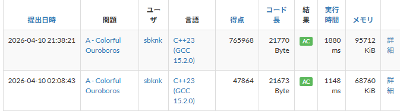
????
バグってますね。明らかに桁数が違います。
最初の100ケースは全部通ってます。あ～～～～！！！！も～～～～！！！！！
増やしたケースが悪いのか、気づいてないケースがあるのか……。
とりあえず最下部に置いた後に右に移動するのは影響ないと思ってましたが悪さしていました。右に移動したときに餌を食べて、なおかつそれが欲しい色だった場合取得できなくて詰みます。直しておきましょう。
それ以外の原因があるかもしれないので置いておいてはいけませんが一旦置いておいて、各ケースの評価を行いましょう。
充填率が50%以上と以下くらいで分ければいいかと思っていましたが、最小が25%、最大が75%なので10%ずつで分けてみてみましょう。
Nが8 ~ 16の9通りで、Mが5通り100でもカバーできそうですが、バグ探しも兼ねて1000件回しましょう。1つ2秒として2000秒、30分かかるの? マジ?
今更気づきましたが、出力の最初にターン数を出さないのは珍しい気がしました。eofまで読む処理になってるのかな。
さて、急にバグ取りに戻りますが、バグの原因がわかりました。
蛇が最終行の手前で餌を置き切ったときに新しい列に移動しますが、新しい列が最終行かつすべて正しい色で埋まっていた場合、蛇がその列の餌を食べないで終了していました。
こんなん気づけるか！
直しておきましょう。ちなみに155ケース目でした。下の画像でいうと、1つだけはみ出している緑を食べないで、残りを食べることになります。全部ずれる上にサイズも足りないという最悪の挙動。大量のテストケース万歳。
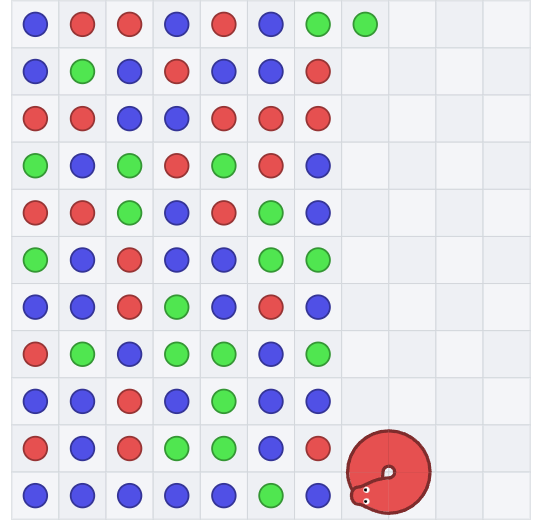
閑話休題。
各N・Mについての結果を整理した表がこちらです。
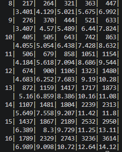
各Nに対して2行を用意して、上が平均、下がそれをN^2で割ったものです。 列は左から25~34,35 ~ 45と10%刻みでN^2に対するMの割合が増えるようになってます。
この表からわかるのはNとMが大きくなると手数がよりかかるようになること、25%~の充填率に対して65%~の充填率だと手数が2倍くらいになるということですね。
Nを倍にしたものをN^2で割ったものが倍になっているのでやっぱりN^3に比例していると考えてよさそうです。 あとは左から30,40,50,60,70で割ることで1つの餌を置く当たりの平均もわかるので出しておきましょうか。
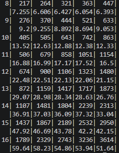
充填率が増えると1つ当たりの手数は減ってるように見えます。これはついでにおける機会が増えるからですかね。でもそうだと思ってるだけかもしれません。でも少なくとも充填率30%前後と70%前後だと後者の方が小さいね。
何にせよ、まとめて置けるようにしないとこれ以上の効率化は無理ですね。……あと二日じゃ無理だよ～。
上でNGになっていた155が通ったので出したんですがこけました。まだ別のバグがあるみたいです。泣きたい。137がこけるんですが、確率挙動らしく0から始めると無限ループで固まって、137から始めると動きます。
……ただまぁよくよく見ると上記の関連で、端数がないときですね。何とかなった。助かった。端数がないからダメっぽいので直しましょう。
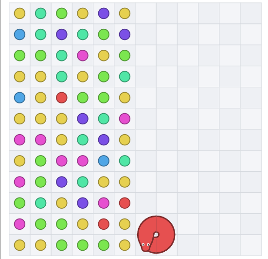
修正したらしっかり点数を伸ばせましたね。よかったよかった。
順位は4/11 3:00頃のものです。
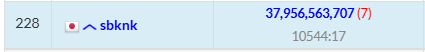
day9
蛇が帰還するときに経路を複数探索するようにしました。
(ty,tx)に置きたい色の餌の座標(i,j)から帰還する際に、下、もしくは左に移動して帰還路を探すBFSをしました。この時、次に置きたい色を回収したパターンがあればそれを採用します。置きたい列txに近すぎると配置時のカットで困るのでtx+2の範囲まで探索します。
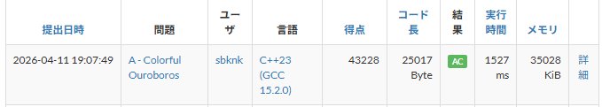
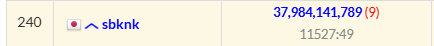
シード0の結果は224になりました。記事内で1つ前は238なので確かに縮まってます。

理想を言うと上と右にも行きたいですね。
……そんなことが出来ればもっと器用なことをしていますが。
ビームサーチするときの1つ当たりの時間を考えていたら、今回の制約は最悪ケースで1つ当たりの配置に10ms使える計算になることがわかりました。Nが16のとき、Mは最大で16*16*3/4 = 192となります。
まぁ、まとめて置いた場合次の色はスキップすべきなのであまり参考にはなりませが。あとは、最後の方は置き方が少ないのでたくさん調べる意味もありません。前半でまとめ置きを探す時間を増やした方がよいです。
seed2の結果を眺めていたら使えない色を取ったときの挙動に無駄が多そうなことがわかりました。
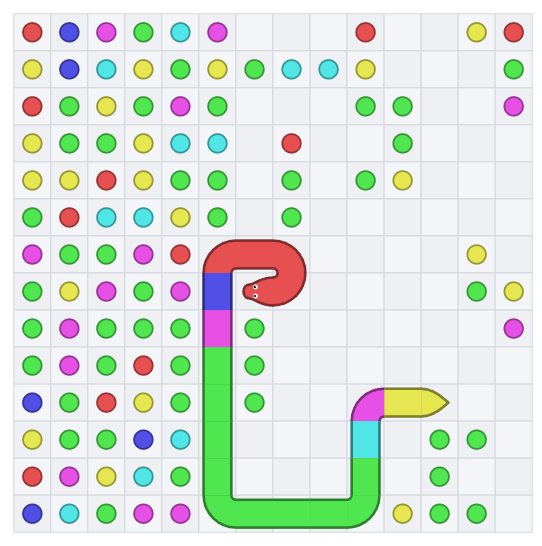
置いたのに使われない色がまとまると、まとめて色を取りたくっても不便になってしまいます。でも今からどうにかなるものでもない気がします。
day10
なんと、ここまで来て途中状態を出力したらその状態を復元できるシステムを作成しました。最初にやるべきでしたね。おもしろすぎる。
引き続き、処理の変更とバグ取りをしました。条件が複雑になりすぎてテストを書いてられないので動かして出たバグを取ります。この複雑なテストも書けるようになりたいですね。
戻ってくるときに余計な移動をなるべく減らすようにしました。置くべき場所が上の方にあるのに帰還時に一番下まで移動するのは損なので、全体的に細かい条件を増やして余計な手順をカットしました。
4/12 18時頃の結果です。
スコアはじりじり伸びてますが、順位が伸びませんね。シード0は220です。
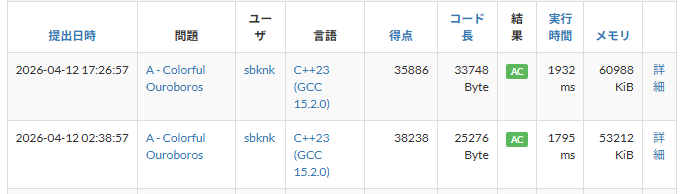
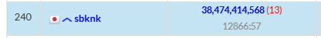

まだバグは幾ばくか残ってますが、ビームサーチで解を複数保持しているので多少無効な解が発生したとしてもうまいこと吸収されるはずです。
大分疲れたので今回はこれを最終版として、後はパラメータを少し調整して終わりにしようと思います。
結果
後日更新予定
まとめ
以上、AHC063の参加記でした。
最終的にやったこととしては、左上から蛇の末尾の色を順番に詰めて、最後に1筆描きで回収するという処理でした。
今回やりきれなかったことは、指定色を回収した後に後続の色を計画的に回収するとかですかね。左と下だけだとどうしても限界がある、でも自由に動かれるといつ千切れるかわからない。どこで体を噛み千切るかわからない状態でこれをやるのは無謀だなと思いました。
序盤から欲しい色の隣に今持っている色を置けばどの色でも回収できるというのは認知していました。実際、一番下のマスに色を配置するときは1つ上のマスの隣に最後の色を置いていい感じに配置するというのを実装しています。
これを実装しきれなかった理由としては、上下左右に縦横無尽動いた状態で取りたい色の隣に今持っている最後の色を置く、というのが難しかったからです。これまた上と同じくいつ千切れるかわからないので困る。
正確には千切れるタイミングはわかるので、千切るしかない場合の判別が難しそうというのがネックでした。 千切れても餌をたどれば復元できますが、どれだけ得になるかの見積もりができなかった。最悪復元し続けるだけになるパターンもありそうだった。
あと体が伸びるとどうしても袋小路が発生します。これを避けるために探索をしていると時間がかかりすぎて碌な解を作れそうにありませんでした。実装するだけなら移動後の盤面でゴールまで到達できるかBFSすればいいです。体の位置を固定して経路問題を解ければよいです。尻尾は移動するか餌を食べて伸びるだけなので、同じマスに寄らないBFSであれば可否に影響はありません。
移動すると効率的な移動方法が出てくることがあるのでそこの考察も重そう。
あとは縦方向にしか置いてませんでしたが、今持っている奴を壁沿いに配置した時に最も一致する場所に置く、みたいなことをしたいとは思いました。一番集めやすい箇所を回収するといっても、じゃあどれだってなって実装が重そうなので諦めました。
ターゲットとして配置している色は単純なUの連結のようなジグザグにしてましたが、これの置き方を変えることでも結果が変わりそうだと思いました。一番多い色をまとめて配置するとかできると探索が楽になるのかなとか思ったり。
あとは各列を一発で置くように右でグルグルしてから配置するというのもやってみたかったです。上で諦めたことをより複雑にしたものですが、長さMを作るより長さNを作る方が現実的なので。あとはNを一発で作らないにしてもN/2とかなら現実的な範囲で作れたかもしれない。必ず2つ集める。そのうえで左と下で回収できる次のやつを集める、とかしてもよかったかもしれない。
考察以外の内容としては、今回初めてビームサーチを実装しました。DFSしかやってませんでしたが、stateを作成すると大分簡単に作れることが分かったので今後の短期でも使えそうな気がします。よかったね。
各フェーズで均等に処理時間を当ててますが、重要なところにはより多く割り当てる処理を入れても面白いかもしれません。
今後の目標は、書きかけの参加記がいくつかあるのでそれも復習がてら仕上げてあげることですかね。……いつか、気が向いたら、ひょっとしたら書くかもしれません。
技術的な話でいうと、ビームサーチを使えるようになったのでもう少し応用できるようになりたいです。今回状態の判別を今までの手数だけで行っているのでうまい評価関数を作ったりしたい。評価関数が命みたいなところありますよね、何もわからんけど。
とまぁ今回はこの辺で。ではまた。